CS184/284A Spring 2026 Homework 3 PathTracer Write-Up
Link to webpage : cal-cs184-student.github.io/hw-webpages-jaegyumee2/hw3/
Link to GitHub repository : github.com/cal-cs184-student/hw3-pathtracer-jaegyumee
Link to HW page : cs184.eecs.berkeley.edu/sp26/hw/hw3/

All of the text in your write-up should be in your own words. If you need to add additional HTML features to this document, you can search the http://www.w3schools.com/ website for instructions. To edit the HTML, you can just copy and paste existing chunks and fill in the text and image file names appropriately.
If you are well-versed in web development, feel free to ditch this template and make a better looking page.
Here are a few problems students have encountered in the past. Test your website on the instructional machines early!
- Your main report page should be called index.html.
- Be sure to include and turn in all of the other files (such as images) that are linked in your report!
- Use only relative paths to files, such as
"./images/image.jpg"
Do NOT use absolute paths, such as"/Users/student/Desktop/image.jpg"
- Pay close attention to your filename extensions. Remember that on UNIX systems (such as the instructional machines), capitalization matters.
.png != .jpeg != .jpg != .JPG
- Be sure to adjust the permissions on your files so that they are world readable. For more information on this please see this tutorial: http://www.grymoire.com/Unix/Permissions.html
- And again, test your website on the instructional machines early!
Here is an example of how to include a simple formula:
a^2 + b^2 = c^2
or, alternatively, you can include an SVG image of a LaTex formula.
Overview
In HW3, I built the core pipeline of a physically-based Path Tracer.
1. Starting with ray generation and triangle intersection using the Möller-Trumbore algorithm, I implemented a Bounding Volume Hierarchy (BVH) to significantly accelerate rendering times.
2. For lighting calculations, I implemented Direct Illumination by comparing Uniform Hemisphere Sampling and Importance Sampling.
3. Extended this to Global Illumination using Russian Roulette to approximate infinite light bounces, dramatically increasing the realism of the scenes.
4. Implemented Adaptive Sampling, which dynamically adjusts the number of samples based on pixel convergence (confidence intervals), teaching me how to effectively reduce rendering noise while optimizing computational performance.
Part 1: Ray Generation and Scene Intersection (20 Points)
Walk through the ray generation and primitive intersection parts of the rendering pipeline.
1. Receive 2D normalized pixel coordinate (x,y) of image plane,
2. Change it to 3D vector of Camera space with FOV.
3. Change camera space to world space with c2w matrix and normarlize it.
4. Make 3D Ray with Camera's position as staring point.
5. Shoot multiple rays in one pixel for AA.
6. Average colors of scene and decide pixel color.
7. Conduct intersection check with shooted ray through every objects in scene.
8. If intersect, update max_t with current intersection distance, and blind further object not to be seen.
Explain the triangle intersection algorithm you implemented in your own words.
1. Solve simultaneous equation of linear equation and Barycentric coordinates equation.
2. Solving it with Cramer's rule so that can be optimized as form of matrix. This is Moller-Trumbore algorithm.
3. Check two downside rule with result t, u, v.
3.1. u, v, (1-u-v) are value between 0 to 1.
3.2. t value should exist between min_t to max_t.
4. If the result value t, u, v meet upside rules, update normal vector of intersection point with interpolation with u,v,w and save it into struct isect.
Show images with normal shading for a few small .dae files.
|
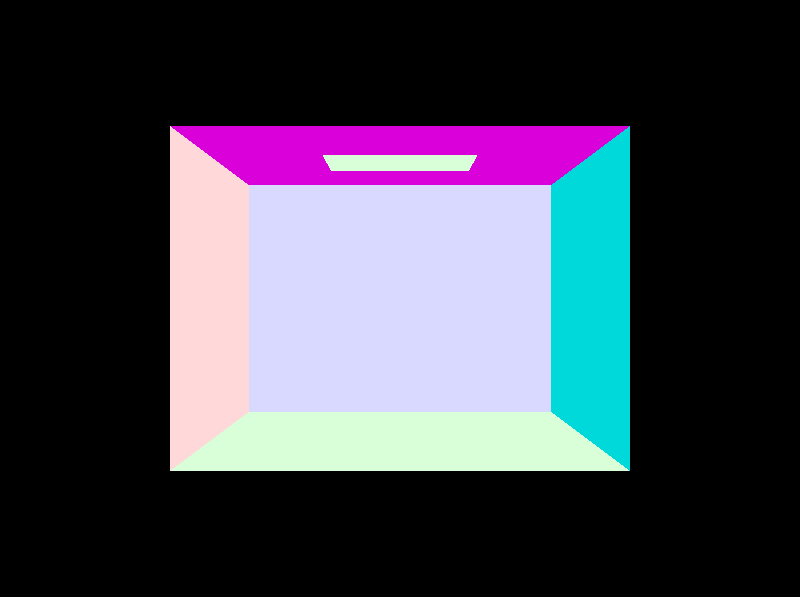 |
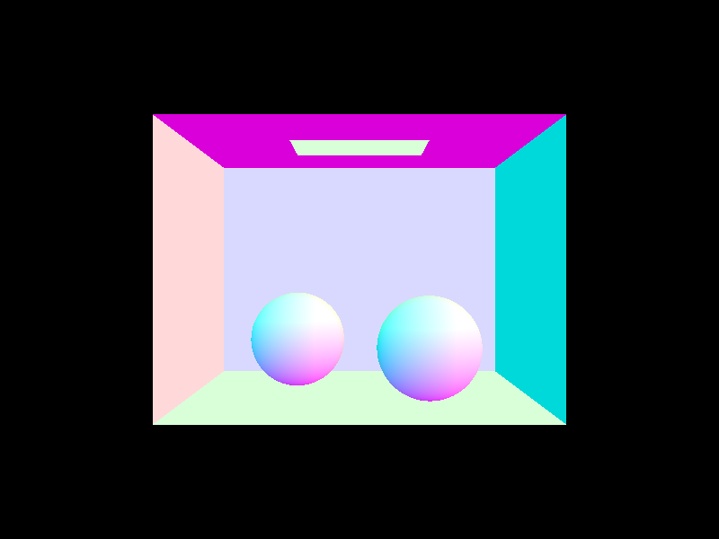 |
|
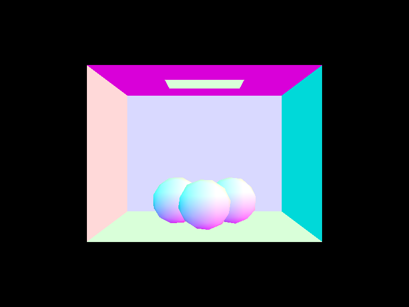 |

|
Part 2: Bounding Volume Hierarchy (20 Points)
Walk through your BVH construction algorithm. Explain the heuristic you chose for picking the splitting point.
1. Loop every objects of current node, and calculate a big BBox that cover all of them.
2. If the number of objects is less than max_leaf_size, set the node as leaf node. Set start point and end point at this node.
3. If not a leaf node, select longest axis in current box.
3.1. I found longest point and select midpoint of every object's centroid for heuristic.
4. Divide the objects into two group with the selected axis as basis.
5. For divided group, call construct_bvh recursively, so that keep make child node and connect.
Show images with normal shading for a few large .dae files that you can only render with BVH acceleration.
|
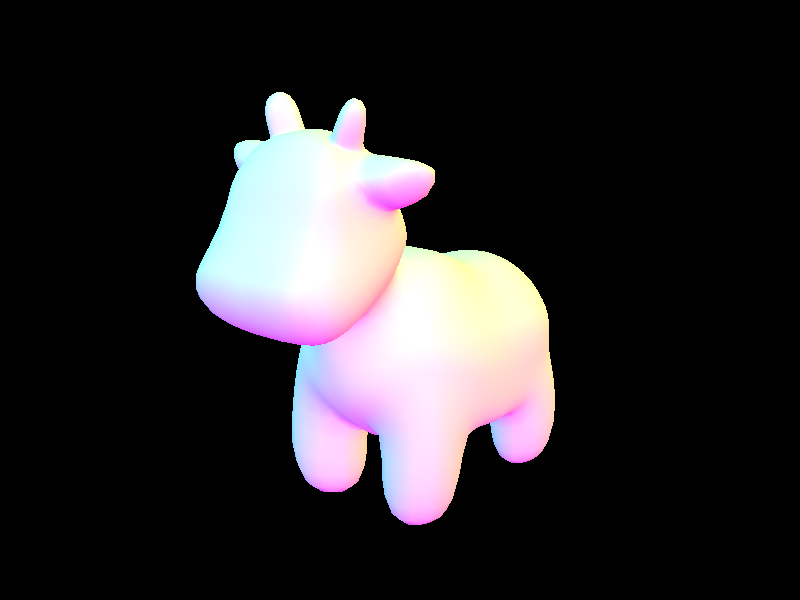 |
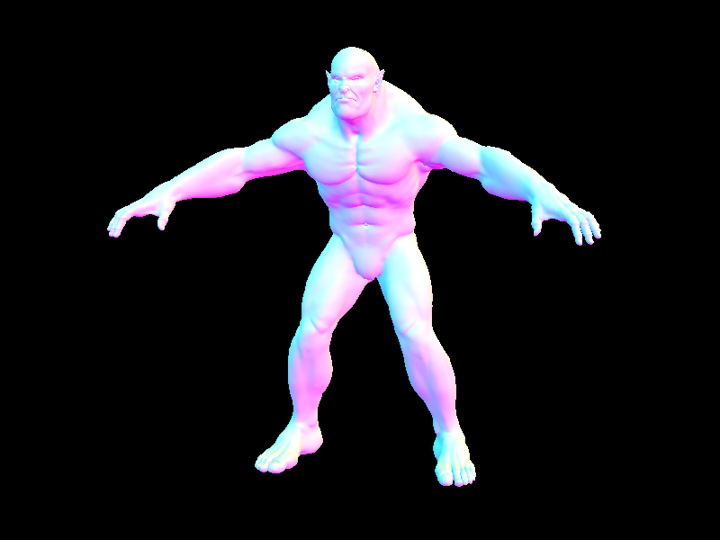 |
|
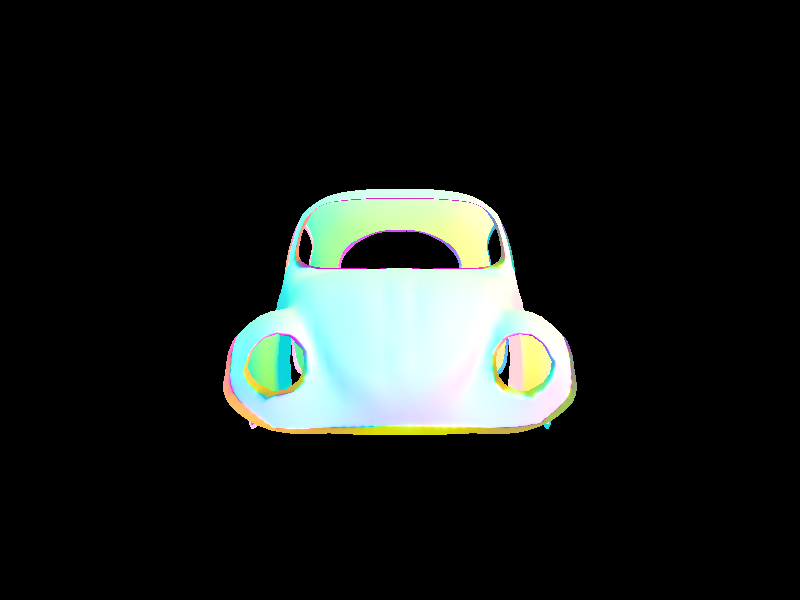 |
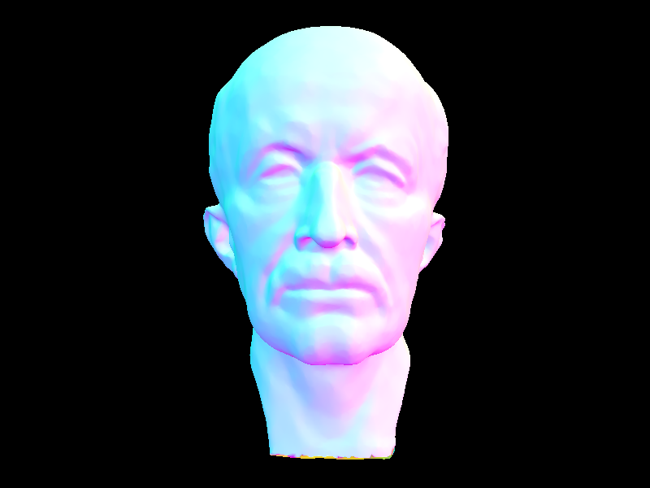 |
Compare rendering times on a few scenes with moderately complex geometries with and without BVH acceleration. Present your results in a one-paragraph analysis.
With BVH is much faster than without BVH. Without BVH, it spend a lot of time to check every triangles one by one by every rays. However, with BVH, it only check boundary detected triangles. It makes rendering much shorter than naive way.
Part 3: Direct Illumination (20 Points)
Walk through both implementations of the direct lighting function.
1. Uniform Hemishpere Sampling : Shoot rays randomly to hemishpere direction from hit point. When this ray hit different object, if the object is light, calculate amount of light with rendering equation. It's inefficient because it shoot the light randomly and hit the light luckily.
2. Importance Sampling : Shoot shadow rays directly to every light in scene. If there's no object between ray and light, there's no shadow and add amount of light. It's accurate and converge because it target the light directly.
Show some images rendered with both implementations of the direct lighting function.
| Uniform Hemisphere Sampling | Light Sampling |
|---|---|
|
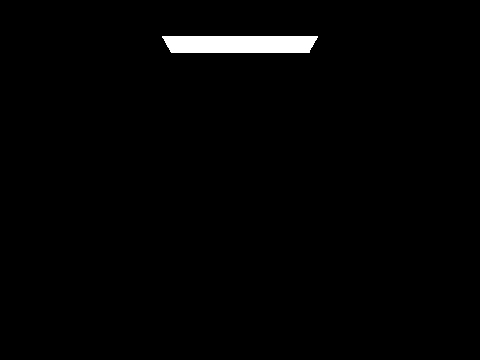 |
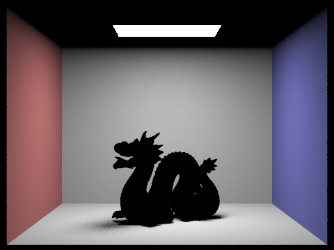 |
|
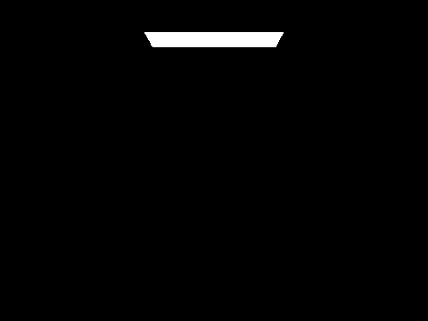 |
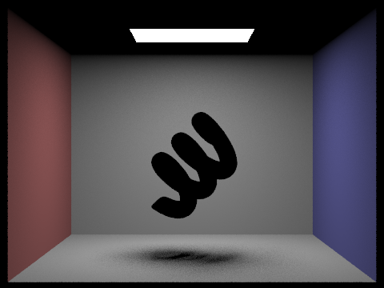 |
Focus on one particular scene with at least one area light and compare the noise levels in soft shadows when rendering with 1, 4, 16, and 64 light rays (the -l flag) and with 1 sample per pixel (the -s flag) using light sampling, not uniform hemisphere sampling.
|
|
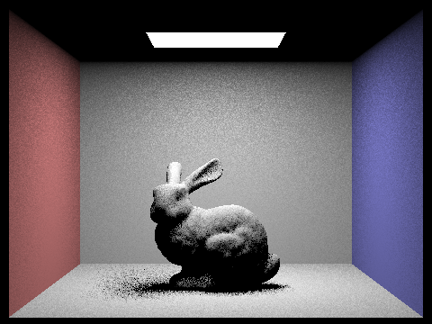 |
|
|
|
As light sample increase from 1 to 64, noise of penumbra made by area light is decreased noticably and it becoems smoother.
Compare the results between uniform hemisphere sampling and lighting sampling in a one-paragraph analysis.
Because hemisphere shoot ray randomly, the less number of light is, the harder to find light source by ray. It make hard noise on entire image. Especially for point light, it's area is 0 and hemishpere can't find it. However, importance shoot ray directly to light source, so that it can calculate amount of light without abandoned rays. Therefore, even if use same sample, importance make less noise and smoother image result.
Part 4: Global Illumination (20 Points)
Walk through your implementation of the indirect lighting function.
1. Add light and decide if shoot the next light or not with russian rullet(70%)
2. If shoot, get direction randomly with sample_f and shoot new light.
3. Conduct step 1,2 recursively.
4. At the end, accumulate the lights with rendering equation.
Show some images rendered with global (direct and indirect) illumination. Use 1024 samples per pixel.
|
|
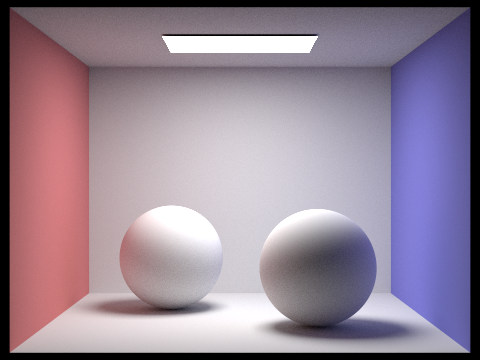 |
Pick one scene and compare rendered views first with only direct illumination, then only indirect illumination. Use 1024 samples per pixel. (You will have to edit PathTracer::at_least_one_bounce_radiance(...) in your code to generate these views.)
|
|
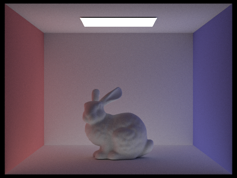 |
Only direct only show the place where light reach directly. This makes shadow parts darkly. However, only indirect show only reflected lights. This makes the scene overally soft and smooth.
For CBbunny.dae, compare rendered views with max_ray_depth set to 0, 1, 2, 3, and 100 (the -m flag). Use 1024 samples per pixel.
|
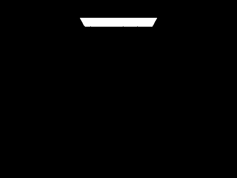 |
|
|
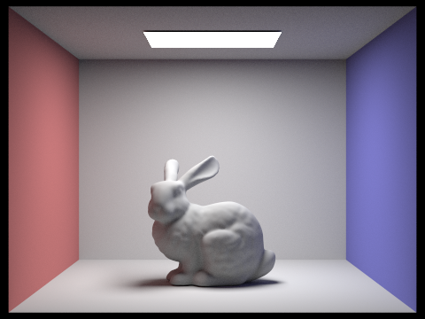 |
|
|
|
|
|
|
Value m decide how many time the rays can be reflected. This value help to make the scene looks more realistic.
1. m = 0 : It only shows light source.
2. m = 1 : It only shows only direct light.
3. m = 2 ~ 5 : The light reflect (m-1) times. The bigger n value is, the brighter the edge and shadow points are.
4. m = 100 : It's not that different with m = 5. It's because the energy of light is too small to affect the amount of light.
Pick one scene and compare rendered views with various sample-per-pixel rates, including at least 1, 2, 4, 8, 16, 64, and 1024. Use 4 light rays.
|
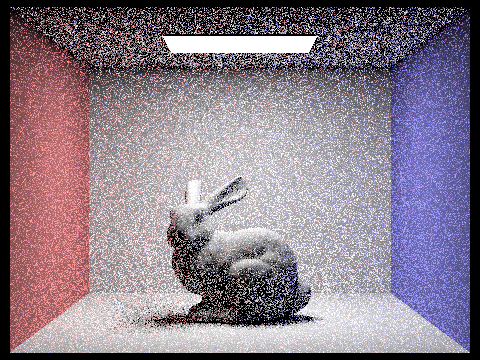 |
|
|
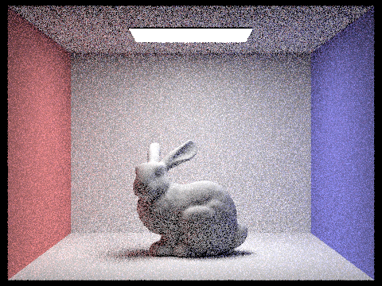 |
|
|
|
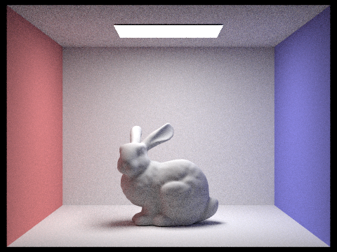 |
|
|
Value s decide how many light will be shoot to make the color of each pixel. The bigger s is, the less noise be made by convergence of integral of rendering equation.
1. s = 1 ~ 8 : It makes so many noise and can't get the detail of the scene.
2. s = 16 ~ 1024 : The average value of each pixel become more and more similar to energy of light, and it become smoother and higher quality.
Part 5: Adaptive Sampling (20 Points)
Explain adaptive sampling. Walk through your implementation of the adaptive sampling.
Adaptive sampling change number of sample by complexity of pixel, instead of shooting same number of sample on every same pixel. The place that have less change of color like wall or floor make the noise vanish fastly, but edge of sadow or complex light source need many samples to block the noise. Adaptive sampling use confidence interval, so that stop additional sampling in the pixel with 95% color reliablity when it is thought to be converged enough. Through this way, it can decrease overall rendering calculation siginificantly with high quality of image.
Pick two scenes and render them with at least 2048 samples per pixel. Show a good sampling rate image with clearly visible differences in sampling rate over various regions and pixels. Include both your sample rate image, which shows your how your adaptive sampling changes depending on which part of the image you are rendering, and your noise-free rendered result. Use 1 sample per light and at least 5 for max ray depth.
|
|
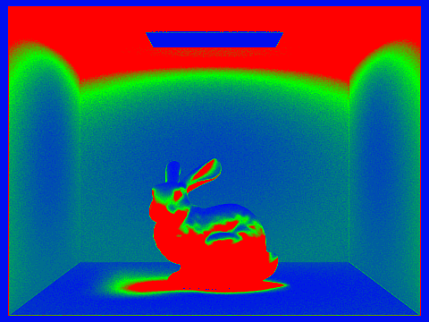 |
|
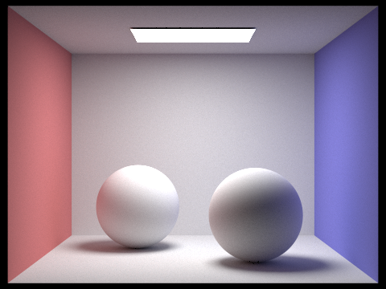 |
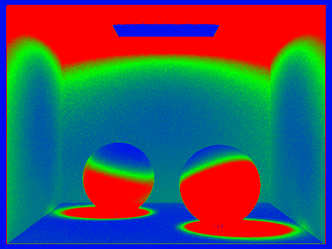 |